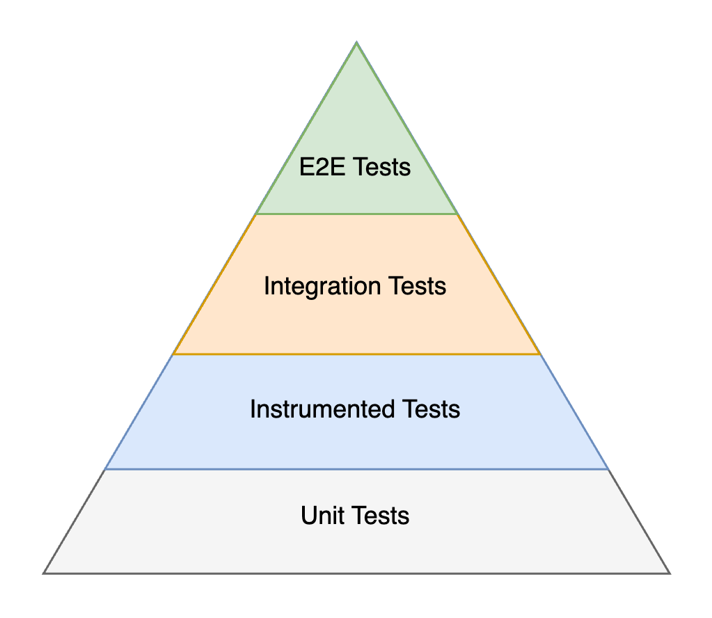

Testing¶
A fundamental design pattern to make testing effective is dependency inversion, which means that high-level APIs don’t depend on low-level details and low-level details only import other high-level APIs. It significantly reduces coupling between components.
App Platform implements the pattern in its module structure and in Kotlin code. By relying on dependency inversion, we decouple projects from their dependencies and enable testing in isolation. This approach is important for unit tests, instrumented tested and integration tests. These three types of tests rely on a chain of trust, where we assume that dependencies are functioning and tests don’t need to be repeated.

Instrumented tests
The sample application implements instrumented tests for two screens and navigates between the tests. The
tests for Desktop
highlight how templates are rendered and robots are used for verification. It also sets up a kotlin-inject-anvil
TestAppComponent,
which replaces the main AppComponent.
The same UI test is implemented for Android.
The Android tests reuse the same robots for verification and set up a
TestAppComponent
in a similar way.
Fakes¶
Unit tests build the foundation of the testing pyramid. They verify the smallest components of our app, which usually are single classes or functions and we rarely test multiple classes in combination. Dependencies of these classes are typically replaced by fakes. Due to this low coupling unit tests tend to be very stable.
Fakes vs real implementations
Using real implementations of dependencies for the unit under test is a valid option as it brings the tested code close to production, increases confidence and removes isolation. A best practice from Google is summarized as:
A real implementation is preferred if it is fast, deterministic, and has simple dependencies. For example, a real implementation should be used for a value object. Examples include an amount of money, a date, a geographical address, or a collection class such as a list or a map.
However, for more complex code, using a real implementation often isn’t feasible. There might not be an exact answer on when to use a real implementation or a test double given that there are trade-offs to be made.
The trade-offs include execution time, determinism and dependency construction. Fakes improve all three points by avoiding slow IO, returning stable results and breaking dependency chains at the cost of diverging from the behavior in production and reduced confidence.
interface LocationProvider {
val location: StateFlow<Location>
}
class RoutingRepository(
private val locationProvider: LocationProvider
)
Imagine to test RoutingRepository. To create an new instance under test, we must provide a LocationProvider.
Since we use dependency inversion and didn’t hardcode a concrete implementation, it is simple to implement a fake
for this interface:
class FakeLocationProvider(
val currentLocation: Location = Location(..)
) : LocationProvider {
private val _location = MutableStateFlow(currentLocation)
override val location = _location
fun updateLocation(newLocation: Location) {
_location.value = newLocation
}
}
Now we can instantiate our RoutingRepository:
@Test
fun `the route is updated when the driver doesn't follow directions`() {
val locationProvider = FakeLocationProvider()
val routingRepository = RoutingRepository(locationProvider)
locationProvider.updateLocation(...)
}
Good fake implementations are valuable. It’s best practice and strongly encouraged as an API provider to implement
fakes for APIs and share them with consumers. The App Platform module structure provides
:testing modules for this purpose. For example, the owner of LocationProvider
is encouraged to use this structure:
:location-provider:public src/commonMain/kotlin/.../LocationProvider.kt
:location-provider:testing src/commonMain/kotlin/.../FakeLocationProvider.kt
The owner of RoutingRepository can import :location-provider:testing and reuse the provided fake in tests.
This avoids duplication.
Sample
The sample app uses :testing modules to implement and share fakes across modules, e.g.
:sample:user:testing. In other modules
fakes are created next to the tests ad-hoc, e.g. FakeUserPagePresenter
and FakeAnimationHelper.
private class FakeUserPagePresenter : UserPagePresenter {
@Composable
override fun present(input: Unit): UserPagePresenter.Model =
UserPagePresenter.Model(
listModel = object : BaseModel {},
detailModel = object : BaseModel {},
)
}
object FakeAnimationHelper : AnimationHelper {
override fun isAnimationsEnabled(): Boolean = true
}
Robots¶
Test Robots are an abstraction between test interactions and the
underlying implementation. Imagine several tests clicking the Logout button use the label to find the UI element
on the screen. If the copy changes from Logout to Sign out, then all these tests would need to be updated.
That is tedious and makes tests harder to maintain. A test robot would hide how the Logout button can be found
on screen and only provides an option for the necessary interaction:
class LogoutRobot : Robot {
fun clickLogoutButton() { .. }
}
Test Robots
are not limited to UI interactions such as verifying UI elements are shown or hidden and invoking
actions on them. They can also be used to change fake implementations or make assertions on them. Imagine a
robot toggling network connectivity. Tests do not interact with fake implementations directly similar to them
not interacting with UI elements directly.
class NetworkRobot : Robot {
var networkEnabled: Boolean
var connectivity: Connectivity
var throwErrorOnSendingRequest: Boolean = false
enum class Connectivity {
LTE, 3G, WIFI, ...
}
}
Another use case is verifying metrics and analytics events. In instrumented tests we’d use a fake metrics implementation rather than sending events to our backend system. The robot would interact with the fake implementation and make assertions:
class FakeMetricsService : MetricsService {
val metrics: List<Metric>
}
class MetricsRobot : Robot {
private val service: FakeMetricsService ...
fun assertMetricTracked(metric: Metric) {
assertThat(service.metrics).contains(metric)
}
}
Fake implementations and test robots help verifying interactions with hardware or devices that are not available during an instrumented test run. For example, interactions with other devices can be simulated using a fake connection.
interface WebSocketConnection {
suspend fun send(message: ByteArray)
}
class FakeWebSocketConnection : WebSocketConnection {
var throwError: Boolean
override suspend fun send(message: ByteArray) {
if (throwError) {
throw Exception("..."
} else {
trackMessage(message)
}
}
}
class ConnectionRobot : Robot {
private val webSocketConnection: FakeWebSocketConnection
fun sendingMessageFails() {
webSocketConnection.throwError = true
}
fun sendingMessageSucceeds() {
webSocketConnection.throwError = false
}
}
Robot types¶
Robot.-
Use this common interface for robots that don’t interact with any UI, whether that’s Compose Multiplatform or Android Views. To obtain an instance of such a robot use the
robot<Type>()function:@Inject @ContributesRobot(AppScope::class) class MetricsRobot( private val metricsService: FakeMetricsService ) : Robot { fun assertMetricTracked(metric: Metric) { assertThat(metricsService.metrics).contains(metric) } } @Test fun verify_analytics_event_tracked() { ... robot<MetricsRobot>().assertMetricTracked(..) } ComposeRobot-
ComposeRobotshould be used as parent type when the robot interacts with Compose UI elements. These robots need access to aSemanticsNodeInteractionsProviderinstance, which is for example provided by callingrunComposeUiTest { ... }within a test. To forward theSemanticsNodeInteractionsProviderinstance to the robot callcomposeRobot<Type>()instead ofrobot<Type>().Warning
Calling
robot<Type>()for aComposeRobotwill result in a crash. Always usecomposeRobot<Type>()instead.@ContributesRobot(AppScope::class) class LoginRobot : ComposeRobot() { private val loginButtonNode get() = compose.onNodeWithTag("loginButton") /** Verify that login button is displayed. */ fun seeLoginButton() { loginButtonNode.assertIsDisplayed() } /** Clicks the login button and starts the login process. */ fun clickLoginButton() { loginButtonNode.performClick() } } @Test fun `sample test`() { runComposeUiTest { composeRobot<LoginRobot> { seeLoginButton() clickLoginButton() } } } AndroidViewRobot-
AndroidViewRobotshould be used as parent type when the robot interacts with Android Views. To obtain an instance of such a robot use therobot<Type>()function:@ContributesRobot(AppScope::class) class AndroidCounterRobot : AndroidViewRobot() { fun seeCounterView() { onView(withText(containsString("Counter: "))).check(matches(isDisplayed())) } } @Test fun counter_is_shown() { robot<AndroidCounterRobot> { seeCounterView() } }
Robots must be annotated with @ContributesRobot in order to find them during tests when using the robot<Type>()
or composeRobot<Type>() function. The annotation makes sure that the robots are added to the kotlin-inject-anvil
or Metro dependency graph.
Generated code
The @ContributesRobot annotation generates following code.
@ContributesTo(AppScope::class)
public interface LoginRobotComponent {
@Provides public fun provideLoginRobot(): LoginRobot = LoginRobot()
@Provides
@IntoMap
public fun provideLoginRobotIntoMap(
robot: () -> LoginRobot
): Pair<KClass<out Robot>, () -> Robot> = LoginRobot::class to robot
}
@ContributesTo(AppScope::class)
public interface LoginRobotGraph {
@Provides public fun provideLoginRobot(): LoginRobot = LoginRobot()
@Provides
@IntoMap
@RobotKey(LoginRobot::class)
public fun provideLoginRobotIntoMap(
robot: Provider<LoginRobot>
): Robot = robot()
}
If a Robot needs to inject other types such a fake implementations, then it needs to be additionally annotated with
@Inject, e.g.
@Inject
@ContributesRobot(AppScope::class)
class MetricsRobot(
private val metricsService: FakeMetricsService
) : Robot {
fun assertMetricTracked(metric: Metric) {
assertThat(metricsService.metrics).contains(metric)
}
}
:*-robots modules¶
Similar to sharing fakes for unit tests by leveraging :testing modules, the module structure of App Platform
provides :*-robots modules to share code for instrumented tests across projects.
It’s strongly encouraged for features to create :*-robots modules and share robot implementations.
Sample
The sample application comes with two robot implementations LoginRobot
and UserPageRobot,
each living in its feature specific :robots module.
Mocks¶
Which mocking framework is recommended?
None.
Mocking frameworks in general are discouraged and the downside outweigh the little conveniences they offer. By following the principle of dependency inversion we can easily avoid using mocking frameworks and implement fakes instead. There are many good resources available describing the advantages of fakes over mocking framework. We recommend reading the provided resources in-order:
- AndroidX strongly discourages mocking frameworks and banned them from new code. This guide explains in more detail their reasoning and it resonates well.
- Google engineers compare test doubles and give excellent advice for how to fake dependencies (this article is longer, but it’s likely the best one available).
- developer.android.com prefers fakes over mocks for test doubles: “Fakes don’t require a mocking framework and are lightweight. They are preferred.”
- CashApp banned mocking frameworks in the Android codebase, because mocks are a maintenance burden.
- Ryan Harter calls out easy traps when using mocks.
- Pravin Sonawane makes similar arguments and highlights how mocks encourage testing the “how” rather than focusing on the “what” (inputs and outputs).
- Google blog Don’t overuse mocks highlights some downsides of mocks and presents real or fake implementations as alternative.